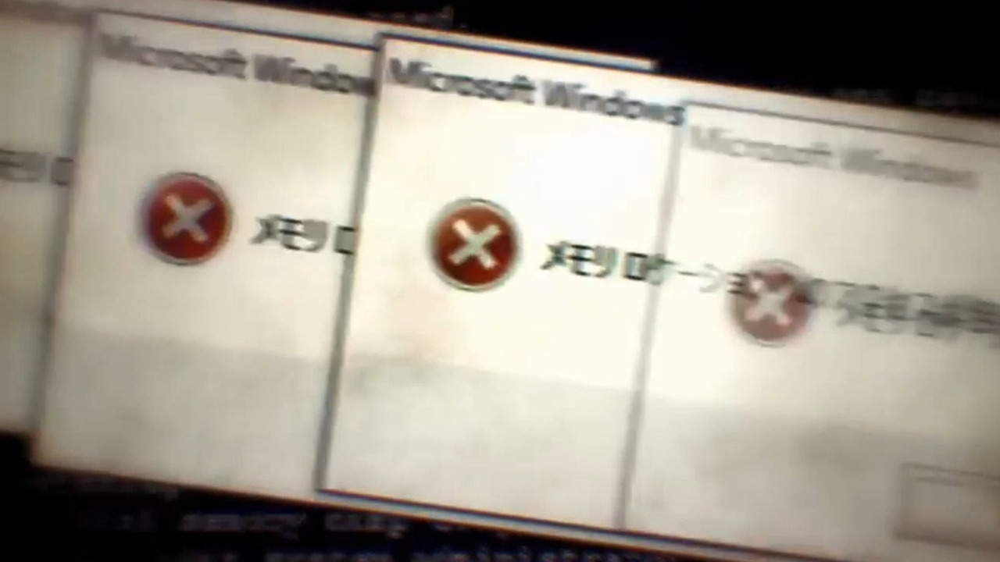

ChilledWindows.exe: How Does It Work?
ChilledWindows.exe is a popular Joke Program made by GAMELASTER in 2016. It was designed to "prank" the user into thinking something was up with their PC by rotating the screen randomly and showing random error messages.
windowsChilledWindowsmalware